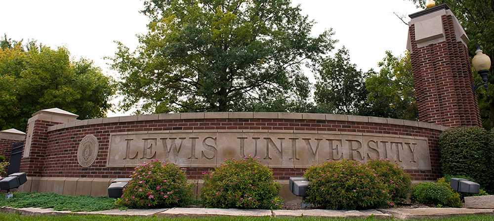

My Place of Birth

My Alma Mater

Hobby of Choice
Hello, my name is Simeon Ngalamou and I'm a 23-year-old computer science student with experience in web development using technologies such as Node.js, React, Angular, JavaScript, HTML, CSS, MongoDB, and REST APIs. I consider myself a self-starter and a lover of learning. I'm always eager to take on new challenges and projects that allow me to grow both personally and professionally. I enjoy working collaboratively and independently, and I'm comfortable taking the lead when necessary. In addition to my technical skills, I'm also fluent in Spanish and French, which I taught myself over the years. I'm currently working on learning Portuguese and Italian as well. I believe that learning new languages not only opens up new opportunities for communication, but also helps broaden our perspectives and understanding of different cultures. As a web developer, I'm passionate about creating intuitive and user-friendly interfaces that make a positive impact on people's lives. I'm always seeking out new technologies and techniques to improve my skills and stay up-to-date with the latest trends in the industry. Thank you for taking the time to learn a bit about me. If you'd like to know more or have any questions, please don't hesitate to contact me.
My Place of Birth
My Alma Mater
Hobby of Choice